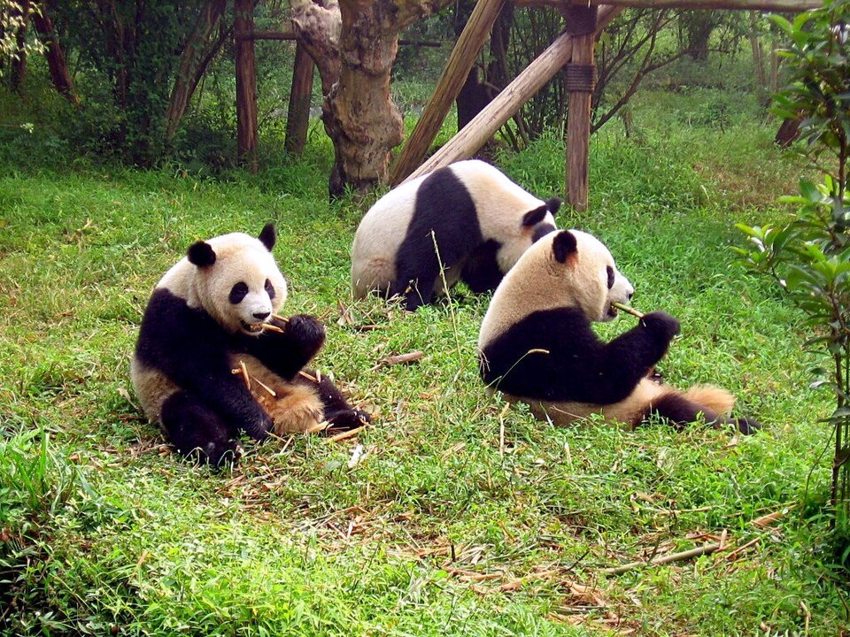
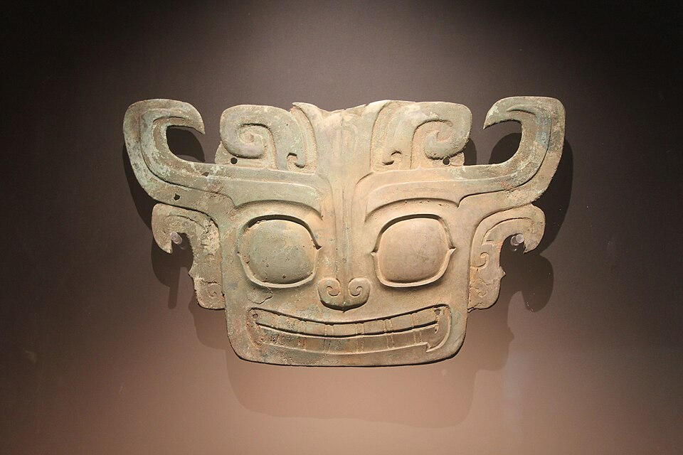

大熊猫的故乡，美食与美景的天堂

大熊猫是中国国宝，全球八成以上野生大熊猫栖息在四川的岷山、崃等山系。成都大熊猫繁育研究基地可以近距离观赏“滚滚”吃竹子、爬树、打滚的憨态。
国宝故乡川菜位列中国八大菜系，以“一菜一格、百菜百味”著称。红油火锅麻辣鲜香、烫煮百味；麻婆豆腐、回锅肉、担担面各具风情，油而不腻、回味悠长。
麻辣鲜香四川山水冠绝天下：九寨沟翠海叠瀑、五彩斑斓，被誉为“童话世界”；黄龙彩池奇幻，峨眉秀甲天下，贡嘎雪山巍然入云。
世界遗产
三星堆遗址距今约3000至5000年，青铜大立人、纵目面具、青铜神树惊艳世界；与金沙遗址、都江堰一起见证古蜀文明的辉煌。
千年古蜀